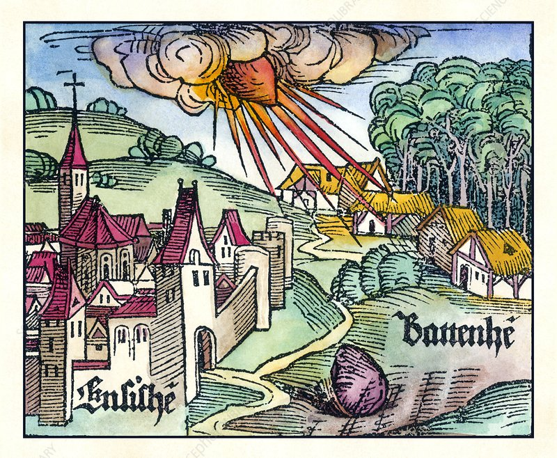

En 1492 una tremenda explosión sacudió los cielos de Ensisheim (Alsacia), en el corazón de Europa. El meteorito fue tan famoso que aparece en obras de arte (Durero lo incluyó en el reverso de su cuadro de San Jerónimo penitente).
Tal como estaban las cosas, podría haberse tomado como otro signo inequívoco más de que el Fin del mundo había llegado. Mientras, Colón descubría América dando paso a un Nuevo Mundo.
Pudo haber sido una señal de que, efectivamente este Viejo mundo había llegado a su fin aunque todavía esté en proceso de eliminación (guerras, colapso, desertización, etc) o, más probablemente, una muestra de que mientras unos se aferraban a supersticiones, la humanidad avanzaba trabajando sobre la realidad: haciendo cosas sobre ella, observándola, aventurándose y obteniendo novedades.
